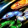

圣盾术
3.5 分钟 · 持续 8 秒
免疫一切伤害，并清掉锯齿冲锋流血及多数持续伤害（化身战的腐化清不掉）。必留给双首领的一次电闪雷鸣和化身的第二次腐化，中间的空档拿来清锯齿冲锋流血。
这本对惩戒骑的威胁分两类：倒刺三叶虫的锯齿冲锋流血，用保护祝福或圣盾术直接清；电闪雷鸣、释放电荷、蚀骨践踏这些全团读条，以及雷霆喷吐点名和化身腐化，都交约 1 分钟一次的圣佑术。圣盾术 3.5 分钟一次，必留给双首领的一次电闪雷鸣和化身的第二次腐化；尾王记得把圣疗术交给化身。
四张手牌管住全本，外加一条硬限制和四个必断读条。
免疫一切伤害，并清掉锯齿冲锋流血及多数持续伤害（化身战的腐化清不掉）。必留给双首领的一次电闪雷鸣和化身的第二次腐化，中间的空档拿来清锯齿冲锋流血。
减伤约三成，外加吸收盾。全团伤害读条时预开：电闪雷鸣、雷霆喷吐点名、释放电荷、蚀骨践踏、第一次腐化。
队友受到的伤害 −30%，这部分转到你身上；点了正义保护还能清掉队友身上的细胞毒素。加瓦兹特每次转好都给正在吃光束的队友。
清中毒。蝰蛇区剧毒蝰蛇的细胞毒素转好就清，这个 10 秒的毒不清就能跳掉超过一管血。
一场 +24 限时实录（展示真实冷却节奏，非每波强制照搬；具体取舍见下方路线）。
看到什么 → 按什么 → 为什么。带「必做」标签的高亮行是每把必做的关键动作。

取自限时录像的天赋。复制字符串，在游戏天赋界面点「导入」。
CYEAAAAAAAAAAAAAAAAAAAAAAAAAAAwoZbbmZWGzYGAAAAAAzUmlZYmx2Y2GmZbGjxYYGLsBgZZ2mZmtGAAAYBwAgxMbAzYmZDYmZYMjBD
这几个防御/功能天赋不要动
可选替换：圣光的正义 + 圣光使者 换成 光铸祝福 + 迅捷审判。